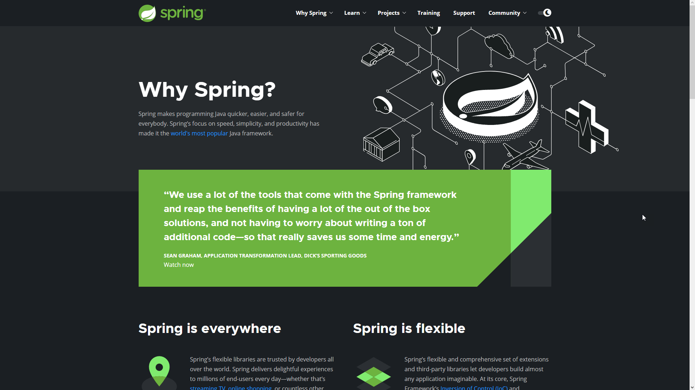

Toda esta información la puede encontrar en spring.io
¿Qué podemos hacer con Spring?
“Usamos muchas de las herramientas que vienen con Spring Framework y obtenemos los beneficios de tener muchas soluciones listas para usar, y no tener que preocuparnos por escribir una tonelada de código adicional, por lo que realmente nos ahorra algo de tiempo y energía."

Categorías
Spring Framework
-

- Spring Framework es el proyecto central dentro de Spring.
REST
-
- Spring Data REST es un proyecto que está dentro del paraguas del proyecto Spring Data, que es más general, que nos va a facilitar la creación de la API REST de servicios web REST basados en hipermedios, y lo hace construyéndolos sobre repositorios de Spring Data.
HATEOAS
-
- Hypermedia as the Engine of Application State (HATEOAS) es un enfoque arquitectónico para mejorar la usabilidad de las API REST para las aplicaciones que consumen las API.
Session
-
- Spring Session proporciona una API e implementaciones para administrar la información de la sesión de un usuario, al tiempo que hace que sea trivial admitir sesiones en clúster sin estar vinculado a una solución específica del contenedor de la aplicación.
Spring Boot
-
- Spring Boot es una tecnología que nos permite crear aplicaciones autocontenidas, con esto nos podemos olvidar de la arquitectura y enfocarnos únicamente en desarrollo, delegando a Spring Boot labores como configuración de dependencias, desplegar nuestro servicio o aplicación a un servidor de aplicaciones y enfocarnos únicamente en crear nuestro código.
Spring Integration
-
- Spring Integration es un marco de código abierto para la integración de aplicaciones empresariales. Es un marco ligero que se basa en el marco central de Spring.
Spring Cloud
-
- El conjunto de proyectos de Spring Cloud contiene muchos de los servicios que necesita para que sus aplicaciones se ejecuten en la nube.
Spring Data
-
- Spring Data es uno de los frameworks que se encuentra dentro de la plataforma de Spring. Su objetivo es simplificar al desarrollador la persistencia de datos contra distintos repositorios de información.
Spring Batch
-
- Spring Batch es un marco de código abierto para el procesamiento por lotes. Es una solución ligera e integral diseñada para permitir el desarrollo de aplicaciones por lotes robustas, que a menudo se encuentran en los sistemas empresariales modernos.
Programación Orientada a Aspectos
-
- Spring incluye un conjunto de anotaciones para trabajar con Programación Orientada a Aspectos (AOP).
Pruebas de integración
-
- Spring incluye un conjunto de anotaciones para trabajar con pruebas de integración.
JMX
-
- Spring incluye un conjunto de anotaciones para trabajar con Java Managed Extensions (JMX).
Ejecución y Programación de Tareas
-
- Spring incluye un conjunto de anotaciones para respaldar la ejecución y programación de tareas.
Abstracción de Caché
-
- Spring incluye un conjunto de anotaciones para trabajar con el almacenamiento en caché.
Otros
-
- Spring incluye algunas otras anotaciones que no encajan en las categorías anteriores.